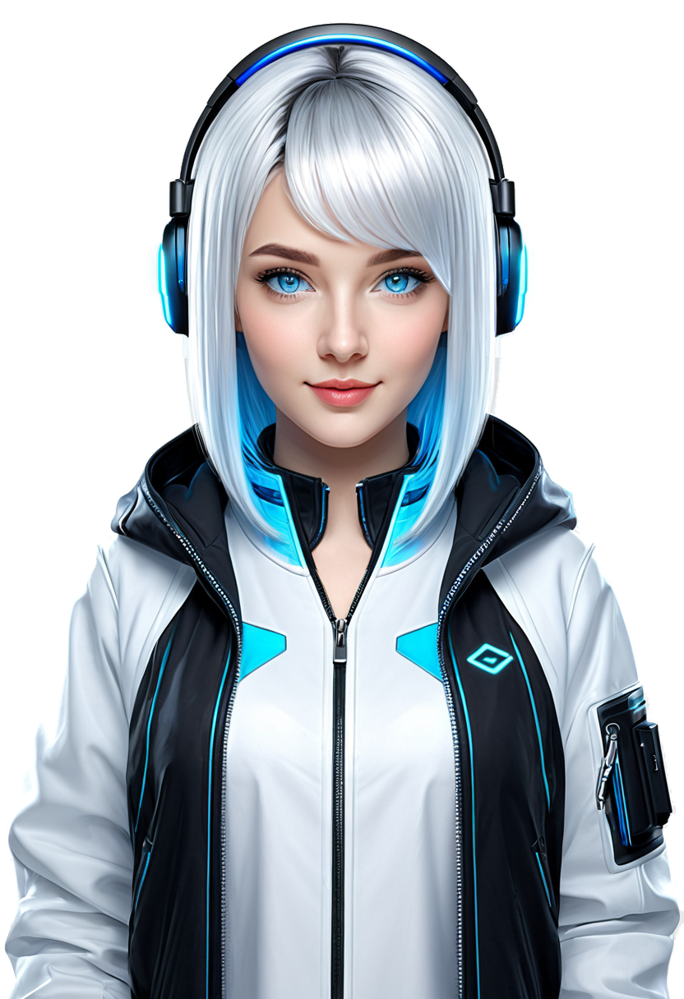

有形象、聽得懂話、還能動手幫你做事的本機桌面 AI 助手。一行指令安裝，大腦跑在你自己的機器上。

Noa 把任何 OpenAI 相容模型變成一個有臉、有聲音、會動手做事的桌面夥伴。預設幫你裝一顆全新的本機大腦，全程不碰任何受限的 VTuber／Live2D 素材。
原創角色 Noa，用純 CSS 做呼吸、眨眼、口型動畫。noa --desktop 可開成透明置頂的桌面寵物視窗。零 Live2D，沒有授權包袱。
直接用瀏覽器內建語音（Web Speech），免下載任何語音模型，開箱即用。
大腦是 hermes-agent，能讀寫檔案、執行終端機指令、寫與改程式——不只是聊天。
Noa 介面和 hermes-agent 大腦都裝在你自己的電腦上。語音用瀏覽器內建的 Web Speech 服務，模型則是你接上的端點：本機的 Ollama、LM Studio，或你自己的雲端金鑰。
100% 自有程式碼搭配 MIT／寬鬆授權元件，可自由散佈，甚至商用。
預設安裝全新 hermes-agent；也能一行設定改接 Ollama、LM Studio 或 OpenAI。
支援 macOS、Windows、Linux。建議用 Chrome 或 Edge（語音支援最完整）。
這行會：① 安裝一顆全新的 hermes-agent（你的私人 AI 大腦，MIT）→ ② 開啟它的本機 API（:8642）→ ③ 安裝 Noa 介面。完成後輸入 noa --desktop 開「透明置頂桌寵視窗」，或 noa 用瀏覽器開 http://localhost:8900。
第一次會請你把大腦接到一個 AI 供應商（Anthropic／OpenAI／OpenRouter／Ollama…）。
Noa 本身只是一層輕薄的橋；不綁任何模型、不綁任何語音引擎。
Noa 是 clean-room 重寫：不含、也不再散佈任何受限的 VTuber 網頁客戶端或 Live2D 專有元件與範例角色。
| 元件 | 授權 | 處置 |
|---|---|---|
| Noa 介面（前後端） | MIT（本專案） | 自有程式碼 |
| 角色美術「Noa」 | 原創 | 作者擁有 |
| hermes-agent（大腦） | MIT · Nous Research | 由官方安裝器裝新的，不 vendor |
| 語音 | 瀏覽器 Web Speech | 免下載、無第三方模型 |
| Live2D Cubism Core／範例模型 | 專有／受限 | 不使用、不打包 |
| 原 Open-LLM-VTuber 網頁客戶端 | 含商業限制 | 不使用、已重寫 |